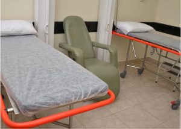
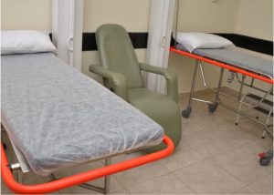

a cardioclínica
quem somos
Localizada em Araxá, Minas Gerais, a Cardioclínica Gastrocenter é referência em saúde e bem-estar, oferecendo diagnósticos precisos e tratamentos especializados em mais de 15 áreas médicas.
Nossa equipe altamente qualificada está pronta para atender você com exames de alta tecnologia nas áreas de cardiologia, gastroenterologia, dermatologia, oftalmologia e muito mais.
Com horários flexíveis e diversos convênios, garantimos um atendimento de excelência para cuidar da sua saúde.

propósito
Inspirar pessoas a cuidar de pessoas.
missão
Cuidar de cada pessoa com atenção e carinho, unindo tecnologia avançada e acolhimento humano para transformar a saúde e o bem‑estar de toda a comunidade de Araxá.
visão
Ser o lugar onde cada paciente se sente seguro e valorizado, inspirando confiança por meio de um atendimento inovador, caloroso e sempre focado na qualidade de vida.
valores
Nossos valores são a empatia que nos aproxima, o compromisso com a excelência, a inovação que aperfeiçoa nossos cuidados, a ética que guia nossas ações e o carinho que inspira cada gesto.
nossa história
Uma história de compromisso, trabalho e dedicação.
A Cardioclínica Gastrocenter oferece aos seus clientes os mais modernos equipamentos e mais avançada tecnologia para a área médica, o que possibilita realizar maior diversidade de exames, com maior precisão nos resultados. Nossos profissionais são extremamente capacitados e comprometidos com a excelência no atendimento das expectativas de nossos clientes.
Recursos avançados de informática empregados na área de saúde permitem que os processos internos da clínica sejam totalmente integrados, desde o início do atendimento à liberação e ao armazenamento dos resultados.
Realizamos todos os exames em um ambiente exclusivo, construído especialmente para atender de forma satisfatória a todos nossos clientes. Respaldados por uma equipe médica composta de profissionais altamente qualificados.
Disponibilizamos ainda um posto de coleta para exames laboratoriais, em parceria com o Laboratório Carlos Chagas, a fim de agilizar e otimizar o atendimento.
1999 - Nasce uma referência em saúde cardiovascular e digestiva
Em 1999, a Cardioclínica Gastrocenter inicia suas atividades em Araxá-MG com foco nas especialidades de cardiologia e gastroenterologia. Desde o início, a missão foi oferecer excelência técnica aliada ao cuidado humanizado.
1999 - Um time completo para cuidar de você
Já em seu primeiro ano, a clínica contava com uma equipe integrada de especialistas e investia na formação contínua de seus profissionais, reforçando seu compromisso com a qualidade do atendimento.
1999 - Exames de ponta para diagnóstico preciso
Com aparelhos modernos para a época, a Cardioclínica oferecia exames como eletrocardiograma, endoscopia digestiva e ecocardiograma, tornando-se referência em diagnóstico na cidade.
 
